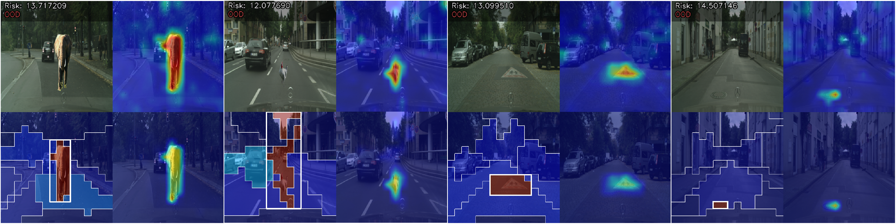

Abstract
Reliable out-of-distribution (OOD) detection is essential for the safe deployment of autonomous vehicles, yet most existing methods operate as black boxes and offer limited insight into why an input is flagged as anomalous. We propose DINO-R, a lightweight and explainablelightweight and explainable OOD detection framework that leverages frozen DINOv3 patch tokens and a small trainable transformer reconstructor. During training on in-distribution (ID) driving scenes only, the reconstructor learns to predict randomly masked feature tokens from their visible context. At inference, Monte-Carlo masking produces stable token-level errors, which are then processed by an object-aware risk scoring mechanism that groups tokens into pseudo-objects via spectral clustering and weights each object's contribution by four driving-relevance factors--saliency, proximity, corridor relevance, and a small-object bonus--to yield both an image-level OOD score and a spatially interpretable anomaly map. On our synthesized Cityscapes-S benchmark, DINO-R achieves an AUROC of 0.9772 and FPR95 of 0.0300, substantially outperforming confidence-based methods, distance-based baselines, and the reconstruction-based MOODv2, while requiring no OOD data for training or threshold calibration. Qualitative visualizations confirm that the produced anomaly maps consistently localize novel objects that pose genuine threats to driving safety, offering human-verifiable evidence for runtime monitoring of autonomous driving perception.
Architecture
Overview of the DINO-R framework. A frozen DINOv3 ViT-B/16 backbone extracts dense patch tokens from the input image. Training: a lightweight transformer reconstructor learns to predict randomly masked tokens via cosine reconstruction loss on ID data only. Inference: Monte-Carlo masking with K trials produces a token-level error map, which is further modulated by object-level importance scores derived from pseudo-object segmentation, yielding a risk-aware anomaly map and an image-level OOD score for both threshold-based decisions and spatially interpretable heatmap visualizations.

Qualitative Examples

Each panel contains four sub-images arranged in a 2×2 grid: the original image (top-left), the reconstruction error heatmap ep (top-right), the pseudo-object segmentation with importance weighting cp (bottom-left), and the weighted risk map rp (bottom-right). In cp, the bold white bounding box indicates the object with the highest importance weight. The left two examples depict standard driving scenes and the right two include non-hazardous overlays, all yielding low risk scores.

The left two examples are synthesized OOD scenes generated by adding anomalous overlays, while the right two are naturally occurring OOD instances detected in real-world driving imagery. OOD examples exhibit substantially higher risk scores, with ep and rp clearly highlighting the anomalous regions.
Experimental Results
Comparison of OOD detection methods on synthesized CityScapes and nuScenes benchmarks. Higher AUROC is better; lower FPR95 is better. Bold indicates the best result and underline the second best.
| Method | CityScapes-S | CityScapes-B | nuScenes-S | nuScenes-B | |||||
|---|---|---|---|---|---|---|---|---|---|
| AUROC ↑ | FPR95 ↓ | AUROC ↑ | FPR95 ↓ | AUROC ↑ | FPR95 ↓ | AUROC ↑ | FPR95 ↓ | ||
| Supervised | MSP | 0.5450 | 0.9400 | 0.5305 | 0.9500 | 0.5588 | 0.9600 | 0.5668 | 0.9500 |
| MaxLogit | 0.5589 | 0.9500 | 0.5476 | 0.9600 | 0.5899 | 0.8700 | 0.5963 | 0.8600 | |
| Energy | 0.5613 | 0.9500 | 0.5518 | 0.9600 | 0.6047 | 0.8700 | 0.6086 | 0.8500 | |
| Energy+React | 0.5557 | 0.9300 | 0.5463 | 0.9500 | 0.6113 | 0.8800 | 0.6149 | 0.8500 | |
| ViM | 0.8430 | 0.6800 | 0.7982 | 0.7500 | 0.7470 | 0.8400 | 0.7507 | 0.8300 | |
| GradNorm | 0.5622 | 0.9500 | 0.5518 | 0.9600 | 0.6084 | 0.9100 | 0.6127 | 0.8900 | |
| KL-Matching | 0.4888 | 0.9500 | 0.4812 | 0.9400 | 0.5535 | 0.9000 | 0.5558 | 0.8900 | |
| Mahalanobis | 0.7900 | 0.7000 | 0.7637 | 0.7200 | 0.6619 | 0.9000 | 0.6685 | 0.9000 | |
| Unsupervised | Mahalanobis-U | 0.7878 | 0.6800 | 0.7628 | 0.7100 | 0.6546 | 0.9000 | 0.6621 | 0.9000 |
| kNN (k=50) | 0.6271 | 0.8800 | 0.6235 | 0.8800 | 0.5373 | 0.9400 | 0.5300 | 0.9400 | |
| MOODv2 | 0.9100 | 0.5200 | 0.9893 | 0.0300 | 0.9538 | 0.1700 | 0.9839 | 0.0600 | |
| DINO-R | 0.9772 | 0.0300 | 0.9808 | 0.0200 | 0.9897 | 0.0100 | 0.9909 | 0.0100 | |
Video Inference Demo
Each video is composed of two sections. The top half shows three side-by-side panels: the original frame (left), the raw reconstruction error overlaid with pseudo-object clustering bounding boxes (center), and the final anomaly map (right). The bottom half displays the EMA-smoothed risk score as a real-time curve over time, reflecting the model's frame-by-frame OOD confidence.
Loading…